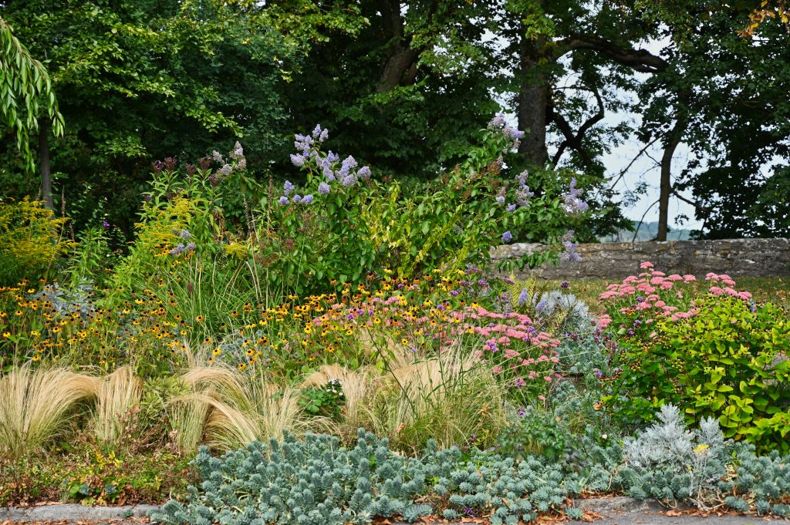

Introduction
Welcome gardener! My name is Stephanie Fisher, and I want to help you incorporate native plants into your St. Louis garden. Whether you're an expert gardener or just getting started, there are many ways your garden can benefit from using native plants. Native plants are low maintenance and good for the environment, while offering much beauty and a sense of place. There are a wide variety of native plants, so they can find their home in any garden. Now’s as good a time as ever to save yourself time and money while helping the environment by including native plants in your garden. Learn more here.
Check out some popular native species in the gallery.
Don't have a lot of time? Take this short quiz for some quick suggestions.
